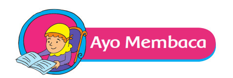
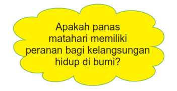
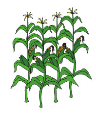
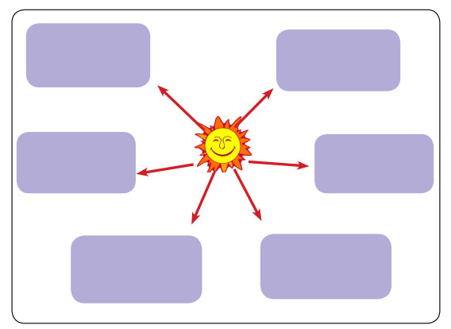
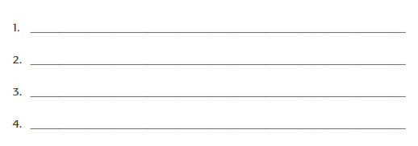
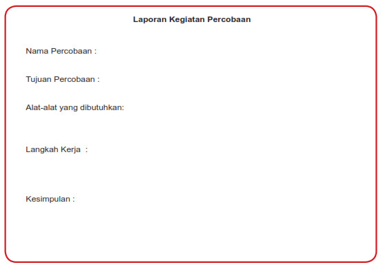

Ayo Membaca
Aktivitas

Kisah Ali Si Biji Energi

Aku Ali Si Biji Energi. Aku menanam biji-biji energi di sebuah ladang
yang luas di peternakanku. Saat matahari bersinar ada energi pada
cahaya matahari. Cahaya matahari membantu biji-bijiku tumbuh menjadi
tanaman-tanaman yang tinggi. Tanaman-tanamanku menyimpan energi
itu di dalam akar, batang, daun, dan butiran biji yang barU.
Dengan segera, aku akan tumbuh tinggi dengan daun-daun yang lebar dan biji-biji
yang baru. Kamu bisa memasak dan memakan aku supaya kamu memiliki energi. Energi
itu akan membantumu tumbuh, bergerak, dan berfikir.
Aku juga memberi makan hewan-hewan ternak dengan beberapa bagian dari tubuhku
sehigga mereka tumbuh besar dan sehat.(sumber: dengan terjemahan dari : http://www.eia.gov/kids)
Sekarang bantulah Beni untuk mencari sebanyak-banyaknya manfaat energi panas
matahari bagi makhluk hidup dalam bentuk peta pikiran di bawah ini! Sertakan
gambar agar lebih menarik.

Dari tabel pengamatan hasil percobaan, tuliskan paling sedikit empat kesimpulan
mengenai pengaruh panas matahari pada percobaan kamu.

Nah, sekarang cobalah untuk mengolah data ke dalam bentuk Laporan Kegiatan
Percobaan di bawah ini!
